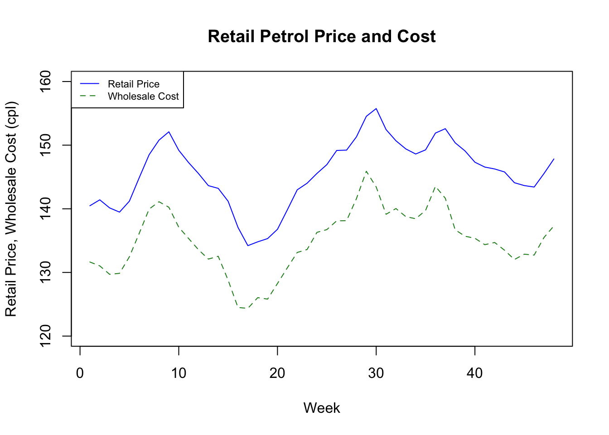
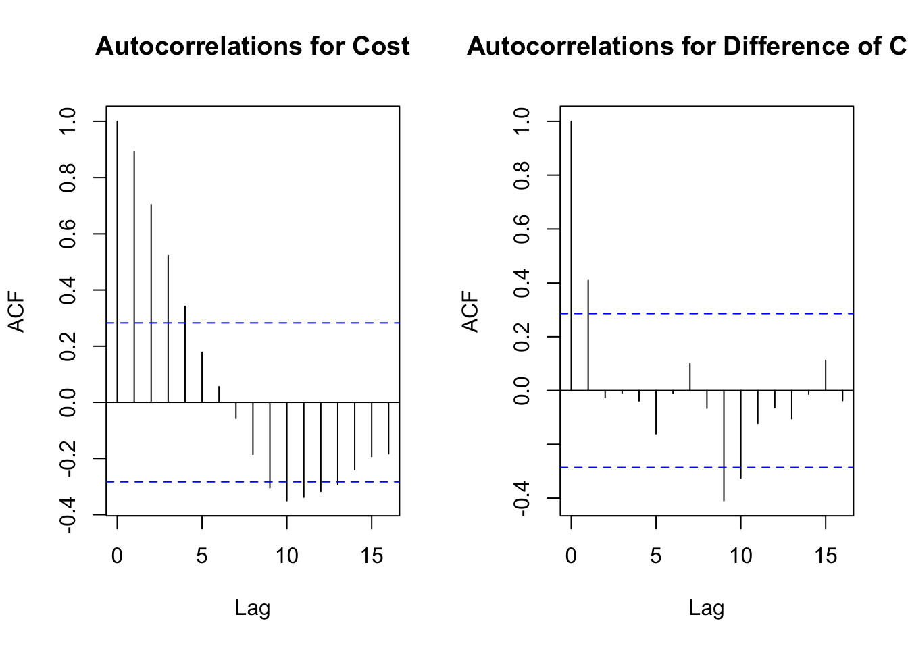

## Load Applied Econometrics Package for testing and heteroskedasticity robust standard errors
library(AER)
# load stargazer()
library(stargazer)
## Load dataset on consumer search and petrol prices
mydata=read.csv(file="tute12_petrol.csv")
# Re-scale search variable in terms of 10000's searches per-week
# Important for making AR(p) and ADL(p,q) models more interpretable
mydata$search=mydata$search/10000
# First and second lag of price
mydata$price_lag1=c(NA,head(mydata$price, -1))
mydata$price_lag2=c(NA,NA,head(mydata$price, -2))
# First and second lag of cost
mydata$cost_lag1=c(NA,head(mydata$cost, -1))
mydata$cost_lag2=c(NA,NA,head(mydata$cost, -2))
# First and second lag of search
mydata$search_lag1=c(NA,head(mydata$search, -1))
mydata$search_lag2=c(NA,NA,head(mydata$search, -2))
# Compute first difference of price variable and its two lags
mydata$d_price=c(NA,diff(mydata$price))
mydata$d_price_lag1=c(NA,diff(mydata$price_lag1))
mydata$d_price_lag2=c(NA,diff(mydata$price_lag2))
# First difference of the cost variable
mydata$d_cost=c(NA,diff(mydata$cost))
mydata$d_cost_lag1=c(NA,diff(mydata$cost_lag1))
mydata$d_cost_lag2=c(NA,diff(mydata$cost_lag2))
# First difference of the search variable
mydata$d_search=c(NA,diff(mydata$search))
mydata$d_search_lag1=c(NA,diff(mydata$search_lag1))
mydata$d_search_lag2=c(NA,diff(mydata$search_lag2))Overview
This tutorial uses the following files available on Canvas:
- tute12.R
- tute12_petrol.csv
The first file is the R code for tutorial 12, the second file is the .csv file that contains the dataset for the tutorial.
The dataset has the following 3 variables:
| week | week of the year in 2013, from week 1 (start of January) to week 48 |
| search | number of website hits on the online petrol price reporting platform [Fuelwatch: https://www.fuelwatch.wa.gov.au/] |
| price | average retail petrol price in a week in Perth, WA |
| cost | equals one if an individual is female, 0 otherwise |
| age | average wholesale petrol cost in a week in Perth, WA |
In total, the dataset contains this information for 48 weeks in 2013 in Perth.
Q1
The first thing we are asked to do is to construct the following variables
Construct the following variables:
- First and second lags of search, price, and cost
- First difference of search, price, and cost
- First and second lags of the first difference of search, price, and cost
- Dummy variables for the four quarters (or seasons) of the year
thenxplain why any lags, differences, or seasonal dummies that you constructed do not have observations.
We can do this in R by running the following code:1
then check to see if the variables have been created correctly
head(mydata,6) week search price cost price_lag1 price_lag2 cost_lag1 cost_lag2
1 1 7.5265 140.48 131.64 NA NA NA NA
2 2 7.9815 141.41 131.03 140.48 NA 131.64 NA
3 3 8.0774 140.14 129.70 141.41 140.48 131.03 131.64
4 4 7.5318 139.48 129.86 140.14 141.41 129.70 131.03
5 5 7.8780 141.20 132.46 139.48 140.14 129.86 129.70
6 6 8.8418 144.90 136.16 141.20 139.48 132.46 129.86
search_lag1 search_lag2 d_price d_price_lag1 d_price_lag2 d_cost d_cost_lag1
1 NA NA NA NA NA NA NA
2 7.5265 NA 0.93 NA NA -0.61 NA
3 7.9815 7.5265 -1.27 0.93 NA -1.33 -0.61
4 8.0774 7.9815 -0.66 -1.27 0.93 0.16 -1.33
5 7.5318 8.0774 1.72 -0.66 -1.27 2.60 0.16
6 7.8780 7.5318 3.70 1.72 -0.66 3.70 2.60
d_cost_lag2 d_search d_search_lag1 d_search_lag2
1 NA NA NA NA
2 NA 0.4550 NA NA
3 NA 0.0959 0.4550 NA
4 -0.61 -0.5456 0.0959 0.4550
5 -1.33 0.3462 -0.5456 0.0959
6 0.16 0.9638 0.3462 -0.5456- The first lags and differences are NA for the first observation because the first observation does not have any observations before it.
- Similar for the second lags: the second lag is NA for the second observation because there are no observations that exist two observations before it (e.g. before the dataset starts).
- The third observation for the difference in the second lag does not exist because the first observation has NA for its first difference, meaning the lagged value of the first difference two periods after the first observation (e.g., the third observation) is also NA.
Q2
Next thing to do is plot the series for price, cost and the number of searches on the web site, search.
# Plot the price series
plot(mydata$week,mydata$price, type="l",col="blue", ylim=c(120,160),
xlab="Week",ylab="Retail Price, Wholesale Cost (cpl)",
main="Retail Petrol Price and Cost")
lines(mydata$cost, col = "forestgreen",type="l",lty=2)
legend("topleft", legend=c("Retail Price", "Wholesale Cost"),
col=c("blue","forestgreen"), lty=c(1,2),cex = 0.7)
The petrol price and cost graph shows retail prices track with costs closely week-to-week, with approximately a 10 cpl difference between the two. We also see two large spikes early in the year (Australian summer) and around week 30 of the year (North American summer), suggesting some seasonality in prices and costs.
# Plotting web search activity
plot(mydata$week,mydata$search,
type="l",col="red",xlab="Week",ylab="Total Weekly Website Hits",main="Platform Website Hits")
The search figure highlights similar seasonal fluctuation in search activity around the times when retail price levels spike throughout the year, suggesting a link between the time series for search intensity and prices.
Q3
We are then asked to compute autocorrelation functions for price, cost, and search and the first differences of price, cost, and search. Then, briefly comment on the persistence of these variables both in levels (the first 3 autocorrelations plots) and in first differences (the second 3 autocorrelations plots) and, what does first differencing do to the autocorrelations?
So, let’s quickly review what we are doing here.
If a series is (weakly) stationary2 —its mean and variance are constant over time and serial dependence depends only on lag—then the autocorrelation structure is informative for modelling and forecasting. A simple way to see this is via the autocorrelation function (ACF) and the correlogram.
Definitions
background - no need to remember the formula
Let \(\{X_t\}_{t=1}^T\) be a weakly stationary time series with mean \(\mu = \mathbb{E}[X_t]\) and variance \(\sigma^2 = \mathbb{V}[X_t]\).
- Autocovariance function at lag \(h\):
\[ \gamma(h) = \mathrm{Cov}(X_t, X_{t-h}) = \mathbb{E}\!\left[(X_t-\mu)(X_{t-h}-\mu)\right]. \]
- Autocorrelation function (ACF) at lag \(h\):
\[ \rho(h) = \frac{\gamma(h)}{\gamma(0)}, \quad \gamma(0)=\sigma^2. \]
Given data \(x_1,\dots,x_T\) with sample mean
\[
\bar{x} = \frac{1}{T}\sum_{t=1}^T x_t,
\]
the sample autocovariance (biased, denominator \(T\); matches R’s acf() default) is
\[ \hat{\gamma}(h) = \frac{1}{T}\sum_{t=h+1}^{T} (x_t - \bar{x})(x_{t-h}-\bar{x}), \quad h=0,1,2,\dots \]
and the sample ACF is
\[ \hat{\rho}(h) = \frac{\hat{\gamma}(h)}{\hat{\gamma}(0)}. \]
Note
Some texts divide by \(T-h\) instead of \(T\). R uses denominator \(T\) in its acf() function.
The correlogram and significance bands
A correlogram is a bar plot of \(\hat{\rho}(h)\) versus lag \(h\).
To eyeball which spikes are “significant,” we add approximate confidence bands:
- White noise bands (default in R):
\[ \text{SE}(\hat{\rho}(h)) \approx \frac{1}{\sqrt{T}}, \quad 95\% \text{ bands: } \pm \frac{1.96}{\sqrt{T}}. \]
- Bartlett’s formula (more general):
For lag \(k\), \[ \mathrm{Var}\big(\hat{\rho}(k)\big) \approx \frac{1}{T}\!\left(1 + 2\sum_{h=1}^{k-1}\rho(h)^2\right), \]
so 95% bands are \[ \pm 1.96 \sqrt{\frac{1}{T}\!\left(1 + 2\sum_{h=1}^{k-1}\hat{\rho}(h)^2\right)}. \]
R Example
Show the code
set.seed(123)
T <- 400
# AR(1) with phi = 0.6
phi <- 0.6
e <- rnorm(T)
x <- numeric(T)
for (t in 2:T) x[t] <- phi * x[t-1] + e[t]
acf(x, main = "series x: ACF")
Tip
No need to worry about the spike at lag 0 (this will always equal one). Concentrate on the spikes from lag 1 onwards and see which of these cut the dotted blue lines; these lags are (statistically) significant.
Table of ACF values
The table below corresponds to the AR(1) series x and uses the same lag range as the correlogram above.
Show the code
# Choose lag range
max_lag <- 12
# Sample ACF (biased denom T, matches R's acf default)
acf_x <- acf(x, lag.max = max_lag, plot = FALSE, type = "correlation")
lags <- as.integer(acf_x$lag)[-1]
rhat <- as.numeric(acf_x$acf)[-1]
Tn <- length(x)
# White-noise bands
se_wn <- rep(1/sqrt(Tn), length(lags))
wn_upper <- 1.96 * se_wn
wn_lower <- -wn_upper
# Bartlett bands
bartlett_se <- sapply(seq_along(lags), function(k) {
sqrt((1 + 2 * sum(rhat[seq_len(max(0, k-1))]^2)) / Tn)
})
bart_upper <- 1.96 * bartlett_se
bart_lower <- -bart_upper
acf_table <- data.frame(
lag = lags,
acf = round(rhat, 3),
ci_white_lo = round(wn_lower, 3),
ci_white_hi = round(wn_upper, 3),
ci_bart_lo = round(bart_lower, 3),
ci_bart_hi = round(bart_upper, 3),
outside_bart = ifelse(rhat < bart_lower | rhat > bart_upper, "Yes", "No"),
outside_white = ifelse(rhat < wn_lower | rhat > wn_upper, "Yes", "No")
)
knitr::kable(
acf_table,
caption = "Sample ACF for AR(1) series x with 95% white-noise and Bartlett bands."
)| lag | acf | ci_white_lo | ci_white_hi | ci_bart_lo | ci_bart_hi | outside_bart | outside_white |
|---|---|---|---|---|---|---|---|
| 1 | 0.529 | -0.098 | 0.098 | -0.098 | 0.098 | Yes | Yes |
| 2 | 0.252 | -0.098 | 0.098 | -0.122 | 0.122 | Yes | Yes |
| 3 | 0.120 | -0.098 | 0.098 | -0.127 | 0.127 | No | Yes |
| 4 | 0.010 | -0.098 | 0.098 | -0.128 | 0.128 | No | No |
| 5 | -0.023 | -0.098 | 0.098 | -0.128 | 0.128 | No | No |
| 6 | -0.059 | -0.098 | 0.098 | -0.128 | 0.128 | No | No |
| 7 | -0.005 | -0.098 | 0.098 | -0.129 | 0.129 | No | No |
| 8 | 0.020 | -0.098 | 0.098 | -0.129 | 0.129 | No | No |
| 9 | 0.003 | -0.098 | 0.098 | -0.129 | 0.129 | No | No |
| 10 | -0.021 | -0.098 | 0.098 | -0.129 | 0.129 | No | No |
| 11 | -0.048 | -0.098 | 0.098 | -0.129 | 0.129 | No | No |
| 12 | -0.081 | -0.098 | 0.098 | -0.129 | 0.129 | No | No |
The table confirms what we saw in the correlogram:
The sample autocorrelations (\(\approx\) 0.53) at lag 1, and at lag 2 (\(\approx\) 0.25) are well outside both the white-noise and Bartlett confidence bands \(\rightarrow\) strong evidence of persistence.
At higher lags, the autocorrelations decline geometrically and stay within the bands \(\rightarrow\) consistent with an AR(1) process where dependence quickly dies out.
So, first let’s look at thte correlogram for price in levels and first diffrences .
par(mfrow = c(1,2))
# Autocorrelations for Price
acf(mydata$cost,main="Autocorrelations for Price")
# Autocorrelations for first difference of price
acf(diff(mydata$price),main="Autocorrelations for Difference of Price")Both price and cost have very persistent time series with up to the fourth lag (one month of lags) having a statistically significant autocorrelation.
par(mfrow = c(1,2))
# Autocorrelations for Cost
acf(mydata$cost,main="Autocorrelations for Cost")
# Autocorrelations for first difference of Cost
acf(diff(mydata$cost),main="Autocorrelations for Difference of Cost")
search is also persistent, although less so with up to the third lag being statistically significant.
par(mfrow = c(1,2))
# Autocorrelations for Search
acf(mydata$search,main="Autocorrelations for Website Hits")
# Autocorrelations for first difference of Search
acf(diff(mydata$search),main="Autocorrelations for Difference of Website Hits")- The ACFs for the first differences show that differencing removes the persistence in each respective time series, however we still find statistically significant autocorrelations for prices and costs with a one-week lag.
Q4
We are then asked to run 3 separate regressions where in each respective regression the dependent variable is price, cost, and search, and where the regressors in each regression are quarterly dummy variables .
First we need to construct the quarterly dummy variables
# Create quarterly dummy variables, week 1 is the first week of January 2018
mydata$sum=as.numeric(mydata$week>=1 & mydata$week<=13) # Summer dummy (Quarter 3)
mydata$aut=as.numeric(mydata$week>=14 & mydata$week<=26) # Autumn dummy (Quarter 4)
mydata$win=as.numeric(mydata$week>=27 & mydata$week<=39) # Winter dummy (Quarter 1)
mydata$spr=as.numeric(mydata$week>=40 & mydata$week<=52) # Spring dummy (Quarter 2)then run the regressions
# Number of observations in the time series (used below)
T=48
# Search seasonality regression check
seas1=lm(search~sum+aut+win,data=mydata)
cov1=vcovHC(seas1, type = "HC1")
se1=sqrt(diag(cov1))
# Prices seasonality regression check
seas2=lm(price~sum+aut+win,data=mydata)
cov2=vcovHC(seas2, type = "HC1")
se2=sqrt(diag(cov2))
# Cost seasonality regression check
seas3=lm(cost~sum+aut+win,data=mydata)
cov3=vcovHC(seas3, type = "HC1")
se3=sqrt(diag(cov3))
## Regression output table
# Discuss the results from stargazer() as asked in the question on the assignment sheet.
stargazer(seas1, seas2, seas3, type="html",
se=list(se1, se2, se3),
digits=2,
covariate.labels=
c("Summer",
"Autumn",
"Winter",
"Constant")
)| Dependent variable: | |||
| search | price | cost | |
| (1) | (2) | (3) | |
| Summer | 0.82** | -0.64 | 0.37 |
| (0.38) | (1.31) | (1.24) | |
| Autumn | 0.52* | -4.75*** | -3.58** |
| (0.30) | (1.47) | (1.44) | |
| Winter | 1.61*** | 5.56*** | 5.95*** |
| (0.33) | (0.81) | (0.98) | |
| Constant | 7.94*** | 145.61*** | 134.26*** |
| (0.24) | (0.52) | (0.55) | |
| Observations | 48 | 48 | 48 |
| R2 | 0.34 | 0.54 | 0.51 |
| Adjusted R2 | 0.29 | 0.51 | 0.47 |
| Residual Std. Error (df = 44) | 0.83 | 3.67 | 3.66 |
| F Statistic (df = 3; 44) | 7.49*** | 17.31*** | 14.97*** |
| Note: | p<0.1; p<0.05; p<0.01 | ||
Note that search has been rescaled in terms of 10000 website hits to ensure well-scaled regression results.
- The dummy variable trap is avoided in these regressions by omitting the dummy variable for spring. So all of the coefficient estimates correspond to changes in search/price/cost in a given quarter relative to the baseline/ omitted category of spring.
| Dependent variable: | |||
| search | price | cost | |
| (1) | (2) | (3) | |
| Summer | 0.82** | -0.64 | 0.37 |
| (0.38) | (1.31) | (1.24) | |
| Autumn | 0.52* | -4.75*** | -3.58** |
| (0.30) | (1.47) | (1.44) | |
| Winter | 1.61*** | 5.56*** | 5.95*** |
| (0.33) | (0.81) | (0.98) | |
| Constant | 7.94*** | 145.61*** | 134.26*** |
| (0.24) | (0.52) | (0.55) | |
| Observations | 48 | 48 | 48 |
| R2 | 0.34 | 0.54 | 0.51 |
| Adjusted R2 | 0.29 | 0.51 | 0.47 |
| Residual Std. Error (df = 44) | 0.83 | 3.67 | 3.66 |
| F Statistic (df = 3; 44) | 7.49*** | 17.31*** | 14.97*** |
| Note: | p<0.1; p<0.05; p<0.01 | ||
- Interpreting the statistically significant results (at the 5% level) in the table, we find that:
- For
search, which recall is in terms of 10,000 website visits on the Fuelwatch platform, there are 0.82 \(\times\) 10000 = 8200 and 1.61 \(\times\) 10,000= 16,100 more searchers on average in a given week in summer and winter relative to average weekly search levels in spring.
- For petrol prices (in cpl) we find that relative to spring, petrol prices are on average 4.76 cpl lower and 5.56 cpl higher in autumn and winter, respectively.
- Similarly, for petrol costs (in cpl), we find that relative to spring, petrol costs are on average 3.58 cpl lower and 5.92 cpl higher in autumn and winter, respectively.
- For
- The results suggest seasonal increases in search in the (Australian) summer and winter, and respective seasonal decreases and increases in petrol prices and costs in the (Australian) autumn and winter.
The winter-related seasonality in petrol prices is, in part, likely due to higher seasonal demand for petroleum during the Northern Hemisphere summer months due to higher rates of travel, and hence petrol demand. This ultimately pushes up global crude oil prices, and hence petrol retailers’ costs and prices.
Q5
Now, estimate the following set of 6 time series regressions below, where search is the dependent variable in each.
Briefly interpret your results in each in terms of their economic and statistical significance.
Also compute the BIC and AIC for each model, and conclude which model would be chosen based on these two information criteria.
- AR(1) with search
- AR(1) + seasonal dummies with search
- AR(2) + seasonal dummies with search
- ADL(0,2) + seasonal dummies with search and price
- ADL(1,1) + seasonal dummies with search and price
- ADL(1,2,2) + seasonal dummies with search, price, and cost
After estimating the models (with HC standard errors)
# AR(1) model with search
reg1=lm(search~search_lag1,data=mydata)
cov1=vcovHC(reg1, type = "HC1")
se1=sqrt(diag(cov1))
K1=2 # Number of parameters in regression reg1
ssr1=sum(residuals(reg1)^2) # SSR from the regression reg1
BIC1=log(ssr1/T)+K1*(log(T)/T) # BIC from the regression reg1
AIC1=log(ssr1/T)+K1*(2/T) # BIC from the regression reg1
# AR(1) model with search with seasonal dummies
reg2=lm(search~search_lag1+sum+aut+win,data=mydata)
cov2=vcovHC(reg1, type = "HC1")
se2=sqrt(diag(cov2))
coeftest(reg2, vcov = vcovHC(reg2, "HC1"))
K2=5
ssr2=sum(residuals(reg2)^2)
BIC2=log(ssr2/T)+K2*(log(T)/T)
AIC2=log(ssr2/T)+K2*(2/T)
# AR(2) model with search with seasonal dummies
reg3=lm(search~search_lag1+search_lag2+sum+aut+win,data=mydata)
cov3=vcovHC(reg3, type = "HC1")
se3=sqrt(diag(cov3))
K3=6
ssr3=sum(residuals(reg3)^2)
BIC3=log(ssr3/T)+K3*(log(T)/T)
AIC3=log(ssr3/T)+K3*(2/T)
# D. ESTIMATE ADL(p,q) MODELS
# ADL(0,2) model with search and price
reg4=lm(search~price_lag1+price_lag2+sum+aut+win,data=mydata)
cov4=vcovHC(reg4, type = "HC1")
se4=sqrt(diag(cov4))
K4=6
ssr4=sum(residuals(reg4)^2)
BIC4=log(ssr4/T)+K4*(log(T)/T)
AIC4=log(ssr4/T)+K4*(2/T)
# ADL(1,1) model with search and price
reg5=lm(search~search_lag1+price_lag1+price_lag2+sum+aut+win,data=mydata)
cov5=vcovHC(reg5, type = "HC1")
se5=sqrt(diag(cov5))
K5=7
ssr5=sum(residuals(reg5)^2)
BIC5=log(ssr5/T)+K5*(log(T)/T)
AIC5=log(ssr5/T)+K5*(2/T)
# E. ESTIMATE ADL(p,q1,q2) MODELS
# ADL(1,1,2) model with search, price, and cost
reg6=lm(search~search_lag1+price_lag1+price_lag2+cost_lag1+cost_lag2+sum+aut+win,data=mydata)
cov6=vcovHC(reg6, type = "HC1")
se6=sqrt(diag(cov6))
K6=9
ssr6=sum(residuals(reg6)^2)
BIC6=log(ssr6/T)+K6*(log(T)/T)
AIC6=log(ssr6/T)+K6*(2/T) report the results using stargazer
| Dependent variable: | ||||||
| Search | ||||||
| (1) | (2) | (3) | (4) | (5) | (6) | |
| Search, Lag 1 | 0.78*** | 0.65*** | 0.65*** | 0.34* | 0.44** | |
| (0.14) | (0.14) | (0.21) | (0.20) | (0.18) | ||
| Search, Lag 2 | -0.01 | |||||
| (0.15) | ||||||
| Price, Lag 1 | 0.28*** | 0.20*** | 0.18* | |||
| (0.06) | (0.07) | (0.10) | ||||
| Price, Lag 2 | -0.16*** | -0.15*** | 0.03 | |||
| (0.05) | (0.05) | (0.06) | ||||
| Cost, Lag 1 | 0.10 | |||||
| (0.08) | ||||||
| Cost, Lag 2 | -0.27*** | |||||
| (0.07) | ||||||
| Summer | 0.55 | 0.56 | 0.87** | 0.63* | 0.88** | |
| (0.35) | (0.35) | (0.35) | (0.36) | |||
| Autumn | 0.38 | 0.38 | 1.01*** | 0.64* | 0.82** | |
| (0.29) | (0.36) | (0.37) | (0.38) | |||
| Winter | 0.71 | 0.72** | 0.88** | 0.72** | 0.90** | |
| (0.33) | (0.35) | (0.33) | (0.37) | |||
| Constant | 1.89 | 2.65** | 2.72** | -8.27*** | -2.73 | -3.86 |
| (1.17) | (1.17) | (1.17) | (2.81) | (3.74) | (3.90) | |
| Observations | 47 | 47 | 46 | 46 | 46 | 46 |
| R2 | 0.56 | 0.60 | 0.60 | 0.67 | 0.70 | 0.75 |
| Adjusted R2 | 0.55 | 0.57 | 0.55 | 0.63 | 0.65 | 0.69 |
| Residual Std. Error | 0.66 (df = 45) | 0.64 (df = 42) | 0.66 (df = 40) | 0.60 (df = 40) | 0.58 (df = 39) | 0.54 (df = 37) |
| F Statistic | 56.35*** (df = 1; 45) | 16.06*** (df = 4; 42) | 11.96*** (df = 5; 40) | 16.37*** (df = 5; 40) | 14.90*** (df = 6; 39) | 13.78*** (df = 8; 37) |
| Note: | p<0.1; p<0.05; p<0.01 | |||||
Estimation results for each of the 8 models are presented in the table above, along with their BIC and AIC scores (see Lecture Note 9 for their formulae and interpretation of trading off model fit for model size when “scoring” a time series model).
We keep with the rescaled search dependent variable in terms of 10,000 website hits.
Interpreting the results for each model, we find:
- AR(1) with search (Model 1) reveals significant and larger persistence in search at a one-week lag.
- AR(1) + seasonal dummies (Model 2) with search reveals that part of the persistence in search is driven by seasonality; once the seasonal dummies are in the regression to control for seasonality in search, the level of persistence in search (conditional on seasonal controls) falls.
| Dependent variable: | ||
| Search | ||
| (3) | (4) | |
| Search, Lag 1 | 0.65*** | |
| (0.21) | ||
| Search, Lag 2 | -0.01 | |
| (0.15) | ||
| Price, Lag 1 | 0.28*** | |
| (0.06) | ||
| Price, Lag 2 | -0.16*** | |
| (0.05) | ||
| Cost, Lag 1 | 0.56 | 0.87** |
| (0.35) | (0.35) | |
| Cost, Lag 2 | 0.38 | 1.01*** |
| (0.29) | (0.36) | |
| Summer | 0.72** | 0.88** |
| (0.33) | (0.35) | |
| Autumn | 2.72** | -8.27*** |
| (1.17) | (2.81) | |
| R2 | 0.60 | 0.67 |
| Adjusted R2 | 0.55 | 0.63 |
| Note: | p<0.1; p<0.05; p<0.01 | |
- AR(2) + seasonal dummies with search (Model 3) reveals that controlling for seasonality, only search lagged at one week has a persistent influence on current search. Twice-lagged search does not.
- ADL(0,2) + seasonal dummies with search and price (Model 4) reveals prices one and two weeks lagged explain current search, as indicated by the statistically significant coefficient on the lagged prices. There’s a positive impact of lagged higher prices lagged one week on search, and a tapering, search reducing influence of higher prices lagged by two weeks.
| Dependent variable: | ||
| Search | ||
| (5) | (6) | |
| Search, Lag 1 | 0.34* | 0.44** |
| (0.20) | (0.20) | |
| Search, Lag 2 | 0.20*** | 0.18** |
| (0.07) | (0.07) | |
| Price, Lag 1 | -0.15*** | 0.03 |
| (0.05) | (0.05) | |
| Price, Lag 2 | 0.10 | |
| Cost, Lag 1 | -0.27 | |
| Cost, Lag 2 | 0.63* | 0.88** |
| (0.35) | (0.35) | |
| Summer | 0.64* | 0.82** |
| (0.37) | (0.37) | |
| Autumn | 0.72** | 0.90*** |
| (0.33) | (0.33) | |
| Winter | -2.73 | -3.86 |
| (3.74) | (3.74) | |
| R2 | 0.70 | 0.75 |
| Adjusted R2 | 0.65 | 0.69 |
| Note: | p<0.1; p<0.05; p<0.01 | |
- ADL(1,2) + seasonal dummies with search and price (Model 5) reveals prices one and two weeks lagged continue to explain current search, as indicated by the statistically significant coefficient on the lagged prices.
Lagged search still has a persistent effect (which is significant at the 10% level but not 5% level),but it is much smaller than what we documented in the AR(1) and AR(2) models.
This highlights how omitted variable bias from not having lagged prices in the time series models was creating upward bias on the coefficient on lagged search in the AR(1) and AR(2) model.
Part of the high degree of persistence in those models was driven by persistent positive impact of oneweek lagged prices.
- ADL(1,2,2) + seasonal dummies with search, price, and cost (Model 6) reveals that when lagged costs are included in the model then it appears that lagged prices have smaller magnitude impacts on current search, while lagged costs by two weeks has a negative impact on current search levels.
It is notable that the coefficient on the one-week lagged search and one-week lagged price are similar in magnitude to those from the AD(1,2) model, with the former now being statistically significant at the 5% level, and the latter being statistically significant at the 10% level (has a 0.088 p-value ).
This model also has the best within-sample fit in terms of adjusted \(R^2\).
The table below reports the BIC and AIC for models (1)-(6), which is also computed in the tute12.R code (see above - this is included in the R code chunks for estimatig the ARDL models).
The BIC-minimising model and AIC-minimising model that this information criteria would select is model (6), the ADL(1,1,2) model.
| (1) | (2) | (3) | (4) | (5) | (6) | |
|---|---|---|---|---|---|---|
| BIC | -0.736 | -0.611 | -0.531 | -0.73 | -0.727 | -0.755 |
| AIC | -0.869 | -0.942 | -0.928 | -1.128 | -1.191 | -1.651 |
| Adj. R-Squared | 0.546 | 0.567 | 0.549 | 0.631 | 0.65 | 0.694 |
| Observations | 47 | 47 | 46 | 46 | 46 | 46 |
Note: Model-minimising BIC and AIC scores are highlighted in bold
Q6
Despite Model (6) being the preferred model, we are then asked to use the ADL(1,1) + seasonal dummy variable, Model(5), to compute the predicted values from the regression, which yield the within-sample forecasts of search for each week.
Then
Plot your within-sample forecasts for search against the actual search values that were realised and comment on your results. Do any weeks yield particularly poor within-sample forecasts?
and find the sample average and standard deviation of the within-sample forecast error.
The forecasts, using R are
t test of coefficients:
Estimate Std. Error t value Pr(>|t|)
(Intercept) -2.734177 3.743979 -0.7303 0.469580
search_lag1 0.338748 0.198720 1.7047 0.096214 .
price_lag1 0.204877 0.069311 2.9559 0.005268 **
price_lag2 -0.150128 0.050510 -2.9722 0.005045 **
sum 0.634138 0.349790 1.8129 0.077548 .
aut 0.643659 0.366369 1.7569 0.086791 .
win 0.724010 0.333480 2.1711 0.036073 *
---
Signif. codes: 0 '***' 0.001 '**' 0.01 '*' 0.05 '.' 0.1 ' ' 1[1] "Within-sample forecast for period T=48: 8.289138"[1] "Within-sample forecast error for period T=48: -1.867538"[1] "Average forecast error: 0.000000"[1] "Std. Dev. of forecast error: 0.541400"Then obtain the plot of actual vs. forecast
plot(mydata$week,mydata$search, type="l",col="blue",
xlab="Week",ylab="Retail Price, Forecast (cpl)",main="Number of Website Searches (10000s)")
lines(mydata$search_fcast_in, col = "orange",type="l")
legend("topleft", legend=c("Website Hits", "Within-Sample Forecast"),
col=c("blue","orange"), lty=c(1,1),cex = 0.6)Within-sample forecasts against actual search values using predicted values from the ADL(1,2) + seasonal dummies model are plotted shown above.
- The sample average and standard deviation of the within-sample forecast error are 0.00 cpl and 0.54 cpl, respectively. On average, the within-sample forecasts “get it right.”
- The weeks that have particularly poor within-sample forecasts are week 8 (forecast error = 1.17 \(\times\) 10000 = 11700 searches), an underestimate of
search), week 30 (forecast error = 1.21 \(\times\) 10000 = 12100 searches), an underestimate ofsearch), and week 48 (-1.87 \(\times\) 10000 = -18700 searches), an overestimate ofsearch).
We can see that even though seasonality is included in the model, the model finds it hard to predict the large seasonal peaks in web search in the Australian winter and summer.
Any better using Model (6)?
search_fcast_in_6=predict(reg6, data=mydata)
mydata$search_fcast_in_6=c(NA,NA,search_fcast_in_6)
plot(mydata$week,mydata$search, type="l",col="blue",
xlab="Week",ylab="Retail Price, Forecast (cpl)",main="Number of Website Searches (10000s)")
lines(mydata$search_fcast_in_6, col = "orange",type="l")
legend("topleft", legend=c("Website Hits", "Within-Sample Forecast"),
col=c("blue","orange"), lty=c(1,1),cex = 0.6)maybe, a little, better?
Q7
Now, using the ADL(1,1) + seasonal dummies model you estimated in question 5, compute the out-of-sample forecast for search in week 49 of 2013 (e.g., one week after the sample ends) and the 95% confidence interval for this forecast.
# C. OUT-OF-SAMPLE FORECASTING
## Build T+1 row from base series, Spring at T+1 ⇒ sum=aut=win=0
newdata1 <- data.frame(
search_lag1 = mydata$search[T], # y_T
price_lag1 = mydata$price[T], # p_T
price_lag2 = mydata$price[T-1], # p_{T-1}
sum = 0, aut = 0, win = 0
)[ , setdiff(names(coef(reg5)), "(Intercept)"), drop = FALSE]
## Use the predict() command to forecast out the next observation in period T+1 out of the sample
search_fcast_out <- predict(reg5, newdata = newdata1)
search_fcast_out 1
7.877009 ## Standard error of search_fcast_in_error=RMSFE (see slides 27 and 28 in Lecture Note 9)
RMSFE=sqrt(var(residuals(reg5)))
## 95% CI for out-of-sample forecast
search_fcast_out_CIL=search_fcast_out-1.96*RMSFE
search_fcast_out_CIH=search_fcast_out+1.96*RMSFE
## Output results
sprintf("Out-of-sample forecast for period T=49: %f", search_fcast_out)[1] "Out-of-sample forecast for period T=49: 7.877009"sprintf("95 CI lower bound for out-of-sample forecast: %f", search_fcast_out_CIL)[1] "95 CI lower bound for out-of-sample forecast: 6.815866"sprintf("95 CI upper bound for out-of-sample forecast: %f", search_fcast_out_CIH)[1] "95 CI upper bound for out-of-sample forecast: 8.938152"Using the ADL(1,1) + seasonal dummies from question 5, the out-of-sample forecast for search in week 49 of 2013 is 8.289 (or 82890 searches) with a 95% confidence interval of [7.2028, 9.350] (or [72028, 93500] searches).
See the R code (above) for its computation, which uses the methods described in Lecture Note 9 on slide 28.
What if we used Model (6)?
## FIX: build T+1 row from base series, Spring at T+1 ⇒ sum=aut=win=0
newdata1 <- data.frame(
search_lag1 = mydata$search[T], # y_T
price_lag1 = mydata$price[T], # p_T
price_lag2 = mydata$price[T-1], # p_{T-1}
cost_lag1 <- mydata$cost[T-1], # c_{T-1}
cost_lag2 <- mydata$cost[T-2], # c_{T-2}
sum = 0, aut = 0, win = 0
)[ , setdiff(names(coef(reg5)), "(Intercept)"), drop = FALSE]
## Use the predict() command to forecast out the next observation in period T+1 out of the sample
search_fcast_out <- predict(reg6, newdata = newdata1)
search_fcast_out 1
8.034771 ## Standard error of search_fcast_in_error=RMSFE (see slides 27 and 28 in Lecture Note 9)
RMSFE=sqrt(var(residuals(reg6)))
## 95% CI for out-of-sample forecast
search_fcast_out_CIL=search_fcast_out-1.96*RMSFE
search_fcast_out_CIH=search_fcast_out+1.96*RMSFE
## Output results
sprintf("Out-of-sample forecast for period T=49: %f", search_fcast_out)[1] "Out-of-sample forecast for period T=49: 8.034771"sprintf("95 CI lower bound for out-of-sample forecast: %f", search_fcast_out_CIL)[1] "95 CI lower bound for out-of-sample forecast: 7.069582"sprintf("95 CI upper bound for out-of-sample forecast: %f", search_fcast_out_CIH)[1] "95 CI upper bound for out-of-sample forecast: 8.999959"Q8
Lastly, using the ADL(1,2,2) + seasonal dummies with search, price, and cost [Model (5)] you estimated in question 5, conduct a Granger Causality test to determine whether price Granger causes search
# GRANGER CAUSALITY
## Re-run the ADL(1,2,2) regression
reg6=lm(search~search_lag1+price_lag1+price_lag2+cost_lag1+cost_lag2+sum+aut+win,data=mydata)
## Conduct the Granger Causality Test
linearHypothesis(reg6,c("price_lag1=0",
"price_lag2=0"),vcov = vcovHC(reg6, "HC1"))
Linear hypothesis test:
price_lag1 = 0
price_lag2 = 0
Model 1: restricted model
Model 2: search ~ search_lag1 + price_lag1 + price_lag2 + cost_lag1 +
cost_lag2 + sum + aut + win
Note: Coefficient covariance matrix supplied.
Res.Df Df F Pr(>F)
1 39
2 37 2 2.7014 0.08034 .
---
Signif. codes: 0 '***' 0.001 '**' 0.01 '*' 0.05 '.' 0.1 ' ' 1Let \(\beta_2\) and \(\beta_3\) be the regression coefficients on price_lag1 and price_lag2 in the ADL(1,2,2) model. The null and alternative hypotheses for the Granger causality test is then:
\[\begin{align*}
H_0: &\, \beta_2=\beta_3=0 \\
H_1: & \,\text{at least one of } \beta_2 \neq 0 \text{ or } \beta_3 \neq 0
\end{align*}\]
Using the linearHypothesis() command (see the above code), we can conduct this joint hypothesis test.
Doing so, yields a F-statistic of F=2.7014 with 2 and 37 degrees of freedom.
The corresponding p-value for the test is 0.08, which implies that we would fail to reject the null at the 5% level. That is, according to this test, price does not Granger cause search.
How are the degrees of freedom computed?
Here, we return to slides 47-49 of the Lecture Note 10 on time series regression.
- df1 = 2 because price has 2 lags in the ADL model
- df2 = 48 - max(1,2,2) - 1 - (2 + 2) - 3 - 1 = 37
Notice here, unlike in slides 47-49, we also have a -3 for df2 corresponding to the 3 seasonal dummy variables, sum, aut, and win, which are parameters that also reduce df2.
For example (from the Lecture example) the estimated ADL(2,3,1) was \[
\begin{align*}
P_t & = 1.17 +0.357\, P_{t-1}+0.303\, P_{t-2}\\
& + 0.932\, C_{t-1}-0.8993\, C_{t-2}+0.206 C_{t-3}\\
& = +15.031 \, E_{t-1}
\end{align*}
\]
so df2 is \(T-max(p_1, q_1, \dots\, ,q_k)-p - \sum\limits_{\iota=1}^K q_{\iota}-1\) where \(T=157\), \(max(p_1, q_1, \dots\, ,q_k)=3\), \(p=2\), \(\sum\limits_{\iota=1}^K q_{\iota}=(3+1)\) and \(-1\) for the constant term giving df2 = 157 - 3-2 -(3+1)-1 = 147)
An alternative way to work out the df2 would be to use df2= T - maximum number of lags - number of variables - constant e.g. in the above example:
df2=\(157-3-6-1=147\)
In our ADL(1,2,2) model we estimated
\[ \begin{align*} \text{search}_t & = -3.86 +0.443\,\text{search}_{t-1} \\ & + 0.177\,\text{price}_{t-1} +0.033\, \text{price}_{t-2} \\ & +0.099\, \text{cost}_{t-1} - 0.0266\, \text{cost}_{t-2}\\ & + 0.877\, \text{Sum}+0.819\, \text{Aut}+0.904\, \text{Win} \end{align*} \] with \(T=48\) so \(max(p_1, q_1, \dots\, ,q_k)=2\), \(p=1\), \(\sum\limits_{\iota=1}^K q_{\iota}=(2+2)\) and \(\text{constant}=1\) but we also have the seasonal dummies \(1+1+1\) giving df2= 48-11=37.
Alternatively, the maximum lag length is 2 and there are 8 variables in the model
(\(\text{search}_{t-1}, \text{price}_{t-1},\text{price}_{t-2}, \text{cost}_{t-1},\text{cost}_{t-2}, \text{Sum}, \text{Aut} \text{ and Win}\)) and the constant so df2 = 48-2-8-1=37.
Footnotes
Note: there are other more elegant ways to construct lagged variables in R which requires the use of time series packages in R, but this is more involved and are left for ECOM30002: Econometrics 2 when time series is covered extensively↩︎
we assume stationary time series for all Y and X variables in an
ADL(p, q1, q2, . . . , qk ) model L9 notes slide 48↩︎